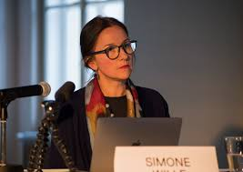

For three decades now, my research and teaching have mainly focused on transnational modernism, Cold War cultural exchange, and the global histories of South Asian art more broadly.

From my training in Art History (MPhil and PhD) to my research-driven practice, I have developed a strong expertise combining historical and archival methods, critical theory, and art historical methods of formal analysis with close readings of textual sources. Combined with many years of fieldwork in regions spanning South and West Asia, and Europe, including East and Central Europe, I have built a collection of personal empirical knowledge and developed an integrative approach to the study of critical global art history. This provides an analytical entry to the key political and ideological concepts of the historical period under study.
In considering elements of the aesthetics of art, political thought, ideological positionings, transcultural exchange in connection with cultural mobility and socialist internationalism, I provide an important model for thinking internationalism beyond North Atlantic narratives.
My monograph Modern Art in Pakistan (Routledge, 2015) introduced this method by conceptualising and establishing genealogical links between modernism and different historical and political settings. Two key publications followed, one marking the beginning of a longstanding collaboration with Prof. Parul Dave Mukherji and Jawaharlal Nehru University (JNU) in New Delhi: Visual Arts in South Asia (co-authored with Mukherji et al., 2015) and A Short History of Art in Pakistan (co-edited by Mitter, Mukherji et al., 2023).
I have also developed the concept of migratory aesthetics via my 2023 article on "The Significance of Mobility and the Artistic Practice of Zahoor ul Akhlaq" in The Journal of Transcultural Studies, and 'immobile mobility' via Chittaprosad's socialist internationalism in "A Transnational Socialist Solidarity" (Stedelijk Studies, 2019).
My monograph Cold War Art Worlds: South Asian Art and Artists in Prague (Leuven University Press, 2025) further conceptualises ways to connect the fields of art, Cold War studies, and critical global modernism, bringing in entirely new archival material. With the research-led collaborative work that produced the co-edited volume André Lhote and His International Students (Innsbruck University Press, 2020), I developed a method combining multilingual, transnational sources from several under-researched archives to enable multipolar work around a singular site.
The Significance of Mobility and the Artistic Practice of Zahoor ul Akhlaq
Journal of Transcultural Studies — guest-edited volume on Transcultural Mobility
The Prague Connection of Chittaprosad (1915–1978)
In 20th Century Indian Art: Moderns, Post-Independence, Contemporary, Thames and Hudson
Chittaprosad in the Collection of the National Gallery Prague
Bulletin of the National Gallery Prague, 6–21
A Transnational Socialist Solidarity: Chittaprosad's Immobile Mobility
Stedelijk Studies
Visual Arts in South Asia
Co-authored with Parul Dave Mukherji et al.
Featured Research Project
In the years between World War I and World War II, the Académie Lhote attracted hundreds of art students from around the world. Among the many options beyond the traditional École des Beaux-Arts, Lhote's was the only studio that offered a strong and consistent theoretical framework for constructing a composition. He did not dictate style, but rather provided a method for translating the visual world to the flat canvas. While some students found his approach too rigid, the very existence of an intellectually rigorous procedure for artmaking stimulated artists to expand, resist, or build on his processes. His classes provided an entry point into modernism for hundreds of artists from around the world who then built on their experience at the Académie upon their return home.
Despite Lhote's impact on generations of artists, both his work and his teaching are generally treated as a footnote in histories of modernism because they counter canonical stories of the period. Because he does not fit neatly into the traditional modernist trajectory that requires constant innovation and a steady progression toward abstraction, Lhote and his Académie have generally been left out of histories of postwar European modernism. This workshop and book project seek to position André Lhote's role as a teacher and artist in the context of interwar and postwar European modernism, develop an understanding of the role played by his remote field academies, and sketch out a broad picture of the artistic outcome of his 1,900 students.
Work in Progress
A new book provisionally entitled The Cold War Archive in Prague: A Dynamic Site for Negotiating Postwar Modernism is in the making and underway. This book is strongly connected with Cold War Art Worlds: South Asian Art and Artists in Prague (Leuven, 2025) in its archival scope and although it fills many gaps that Cold War Art Worlds could not publish, it is marked by incompleteness, rupture, imagination.